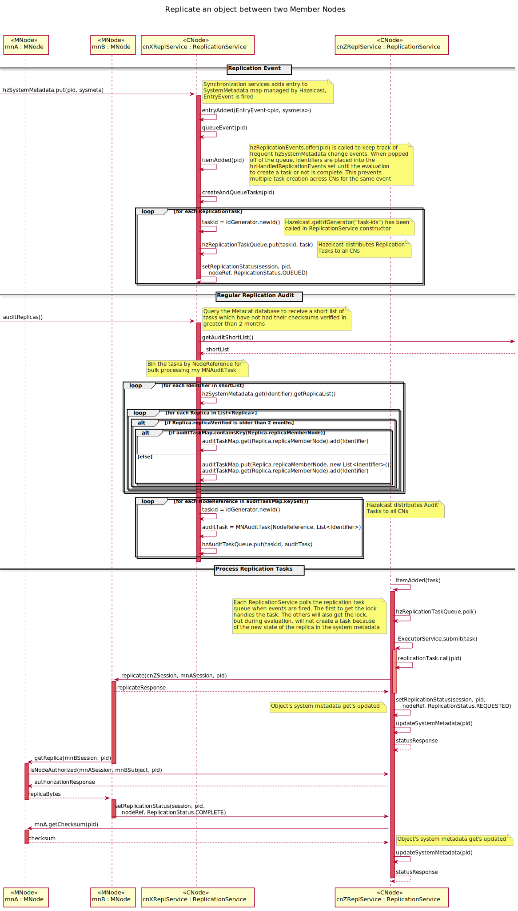
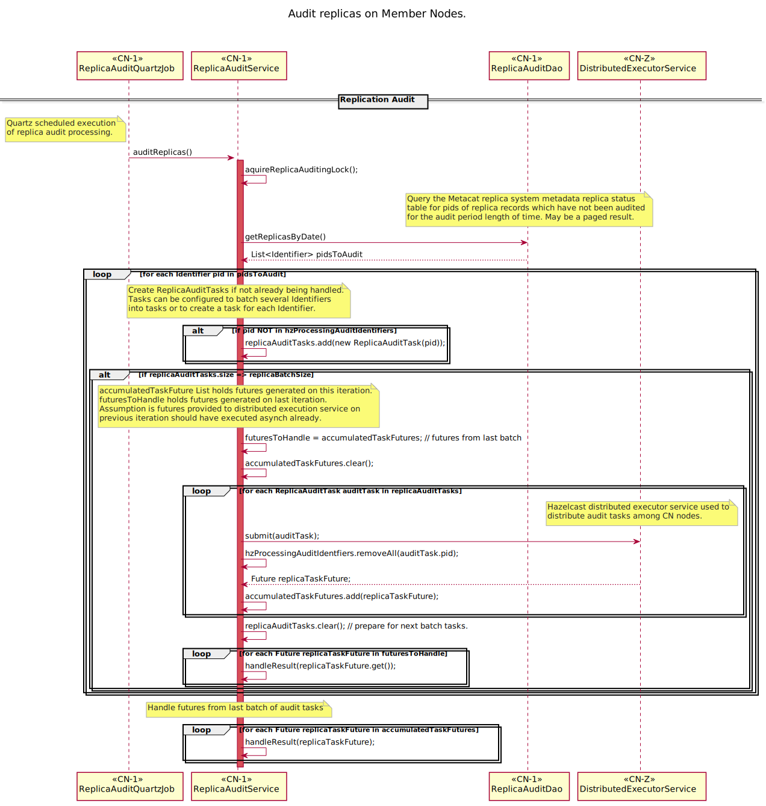

Use Case 09 - Replicate MN to MN¶
- Revisions
View document revision history.
- Goal
Replicate data from Member Node to Member Node.
- Summary
Replication of content between Member Nodes (MN) is done to improve persistence of information (avoid data loss with loss of MN) and to improve accessibility (more choices for content retrieval can lower bandwidth requirements for any particular MN). The process of replication is controlled by a Coordinating Node (CN).
A full copy of science data and metadata is made during the replication process, so the original science metadata and data is copied to the recipient MN.
Data is copied across as an exact copy. Science metadata may be transformed into another format if the original can not be supported.
It is important that the original metadata is preserved on the CNs, as it is always possible that the original MN where the content was published may go offline or be removed from the DataONE system.
- Actors
Two Member Nodes, one or more Coordinating Nodes
- Preconditions
Content is present on a Member Node
The content has been registered with the DataONE system (i.e. Member Node Synchronization has occurred for the data and metadata)
- Triggers
A Coordinating Node detects that there are insufficient copies of the object(s) in question.
Information on a Member Node is altered
Capabilities of a Member Node changes (accepting more or less content)
Replication policy of DataONE or a Member Node changes
A Member Node goes offline
- Post Conditions
Content is present on the recipient Member Node
System metadata is updated to reflect the change
Watchers are notified of the change
Member Node and Coordinating Node logs are updated
Figure 1. Use case diagram indicating the actors involved in the process of Member Node replication.
Figure 2. Interactions for use case 09. The diagram describes transfer of a single object from MN_A to MN_B as directed by a CN. It is assumed that the object does not exist on MN_A and the object has been identified as requiring replication by the CN checking its status in the system metadata. The end state of a replicate operation is that content is available on the MN, the MN has notified the CN of such, and the CN will schedule a synchronize operation that will verify the copy as legitimate.
Figure 3.
Implementation Details¶
Replication of objects between Member Nodes (MN) within the DataONE system is managed by the Coordinating Nodes (CN). CNs are aware of the replication policies of each object (through system metadata) and the capabilities of each MN (through node capabilities), and populate a distributed queue of replication tasks to be processed by all of the CNs.
Replication can be initiated in three ways:
CN synchronization: harvesting of system and science metadata
CN timed replication: periodic sweep of all system objects
MN event-based replication: MN sends replication request to a CN (not implemented)
Replication Events¶
The CN’s maintain a synchronized, distributed Hazelcast Map of system metadata (hzSystemMetadata). This map reflects the current state of the DataONE system’s object store. This in-memory map is also bound to the backing Metacat object store via the Hazelcast MapStore and MapLoader interfaces. The hzSystemMetadata map serves as an object-level locking mechanism across CNs, and any service that will make changes to an object’s system metadata will need to gain a lock on the given object identifier in the map. The hzSystemMetadata map is set to be persisted (backed-up) on 3 CNs.
As the CN Synchronization Service becomes aware of create, update, and delete events for MN objects through harvesting, it updates the hzSystemMetadata map. The Replication service monitors this map for entry changes, and builds a list of ReplicationTask objects for each changed identifier in the map. This is done by calling ReplicationService.createReplicationTaskList(pid). The Replication Service evaluates the ReplicationPolicy of the given object’s system metadata, evaluates the capabilities and availability of the potential target MNs, and creates a ReplicationTask for each MN replication target up to the numberOfReplicas in the object’s ReplicationPolicy. Each ReplicationTask is listed based on priority. The Replication Service then iterates through the returned task list and populates the hzReplicationTasks queue with the ordered tasks. Each item offered to the queue consists of a task identifier and a ReplicationTask.
Note
TODO: Describe the CN time-based population of the replication task queue that periodically does a full sweep of the object store.
Note
TODO: Describe the MN-based replication via a CNReplication API request (not implemented)
Processing Replication Tasks¶
As the hzReplicationTasks queue is populated, each CN’s Replication Service receives entry added events and polls the queue with a short timeout to submit new tasks to process. A CN Replication Service instance’s entryAdded() method is fired, and it in turn polls the task queue and submits the ReplicationTask to the cluster-wide Executor Service. One of the CN’s will execute the task by calling the ReplicationTask.call() method. This call initiates MN replication. The CN calls replicate() on the target MN (mnB), passing in the cnZ token (cnZToken), the originating node reference (mnA), and the identifier of the object to be replicated (pid). This call triggers the MN (mnB) to call getReplica() on the originating MN (mnA), passing in mnB token (mnBToken) and the identifier of the object to be replicated (pid). In turn, the CN updates the system metadata for the object, setting the ReplicationStatus to REQUESTED after gaining the lock on the object. The lock is immediately released.
Before responding to getReplica(), mnA checks for replication authorization by calling isNodeAuthorized() on the CN, passing in the mnA token (mnAToken), the Subject listed in the mnBToken (mnBSubject), the object identifier (pid), and the desired replication permission (replicationPermission). The Replication Service looks up Subject in the LDAP replication group, and returns the response.
Upon successful authorization, mnA replicates the object (replicaBytes) to the target MN (mnB). mnB in turn sends a successful replication response to the CN (replicateResponse). The CN Replication Service once again updates the system metadata for the object after gaining a lock in the hzSystemMetadataMap. The lock is immediately released, and the statusResponse is sent to the CN.
Note (2011.01.07 CWB): This simple authentication scheme will not work on member nodes that have their own access control rules. In this scheme, each member node will need to have knowledge of the administrative (or replication) credentials for each of the other member nodes. The CN needs to handle the login actions for both of the MNs involved and send an authenticated token from MN_A to MN_B so that it can use that credential to successfully get the document. This is only the case if the document on MN_A is read protected. If it is public, not token is needed.
Note that the call setReplicationStatus with a value of COMPLETE is functionally equivalent to the notify(objectCreated, identifier) call indicated in use case 06.